Kubernetes und Container - Aber Sicher!
Andreas Falk / @andifalk
Slides: https://andifalk.github.io/kubernetes-container-aber-sicher
Source-Code: https://github.com/andifalk/kubernetes-container-aber-sicher

Andreas Falk
Novatec Consulting GmbH
https://www.novatec-gmbh.de
andreas.falk@novatec-gmbh.de / @andifalk

K8s & Containers
What could go wrong here?
Challenges in Kubernetes

Severe vulnerability in Kubernetes
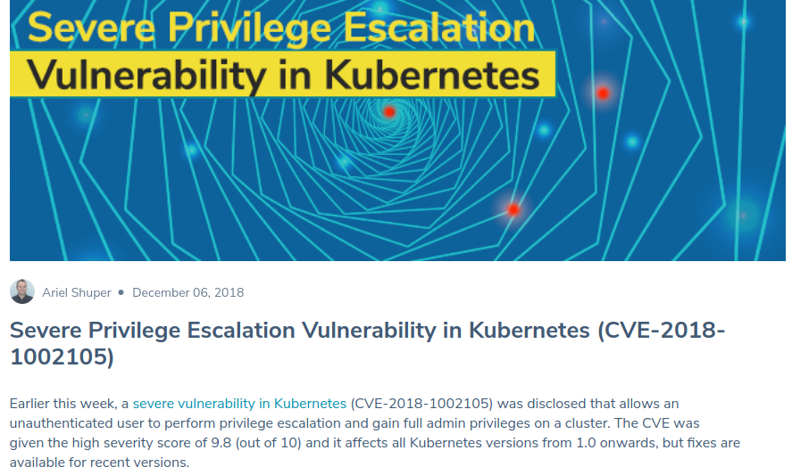Crypto mining via K8s dashboard
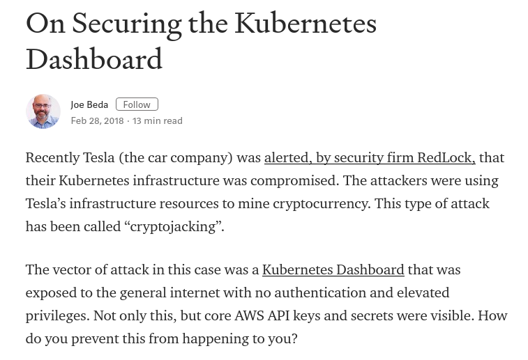Open etcd (1)
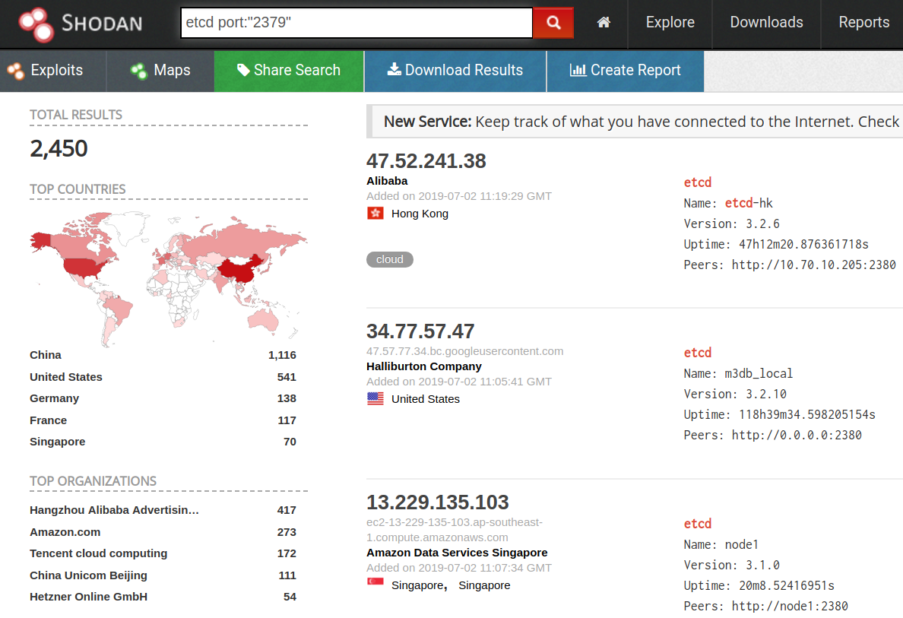Open etcd (2)
$ etcdctl --endpoints=http://xx.xx.xx.xx:2379 cluster-health
member b97ee4034db41d17 is healthy: got healthy result
from http://xx.xx.xx.xx:2379
cluster is healthy
Vulnerable docker images
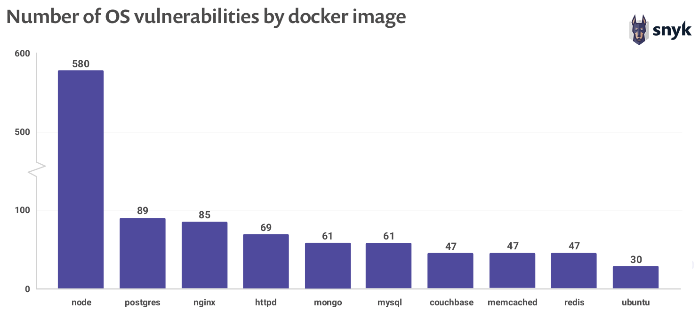All is root!
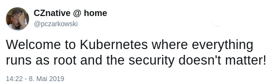Root without Password!
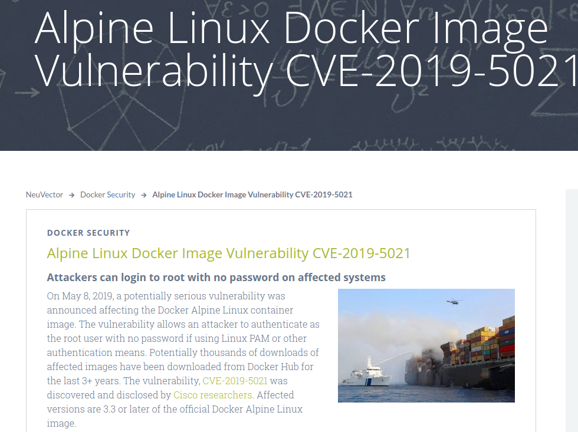What's in this session
Docker Security 101
Kubernetes 101
Secure Kubernetes Deployment (Live Demo)
Kubernetes Security Best Practices
Docker Security
101
Docker Security Basics
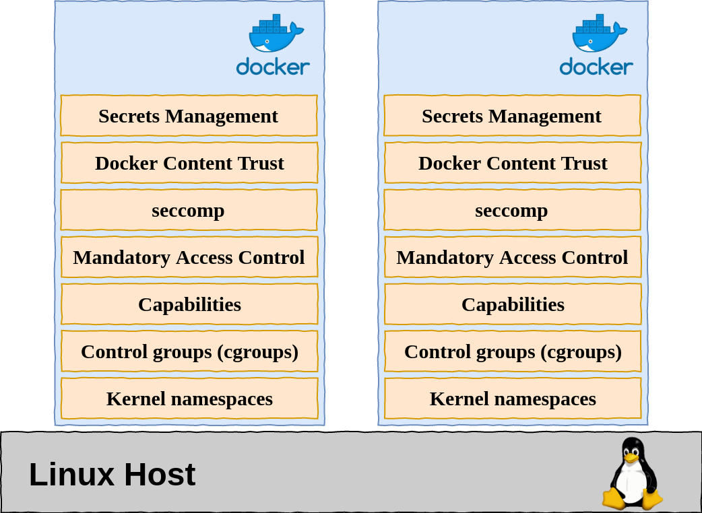
Container Images
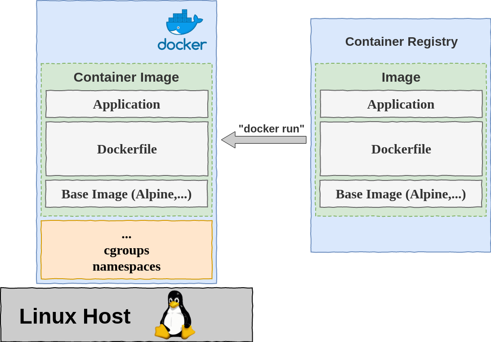
Image Security
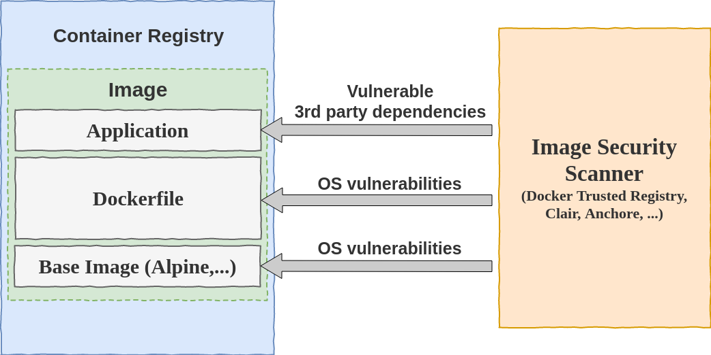
Kubernetes
101
Kubernetes Basics
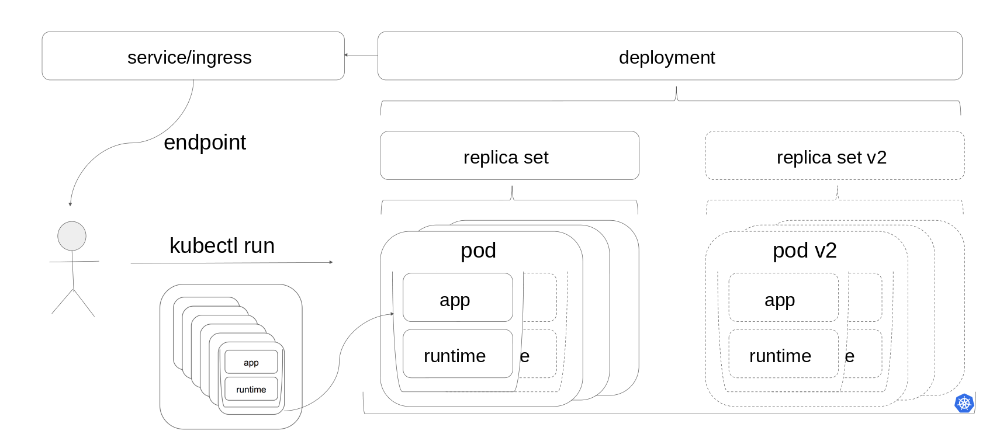
By courtesy of Matthias Haeussler (@maeddes)
Secure K8s Deployment
Live Demos
Demos-Code: https://github.com/andifalk/kubernetes-container-aber-sicher
Deployment Steps
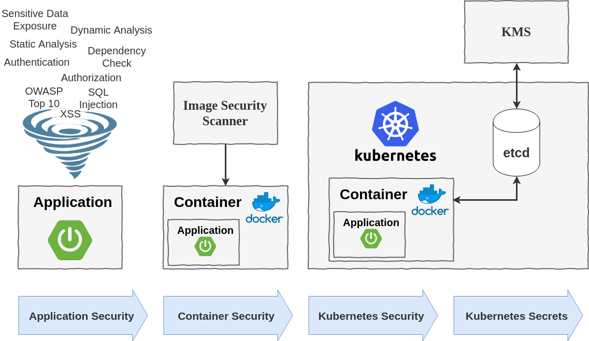
Application Security
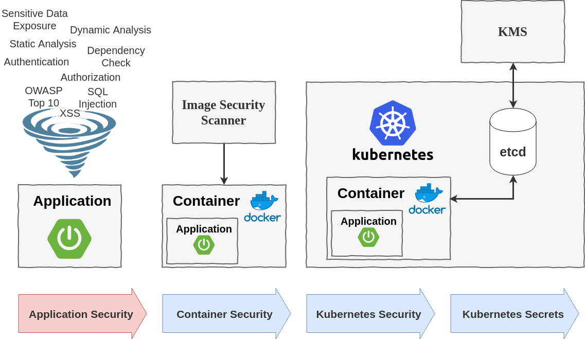
Application Security
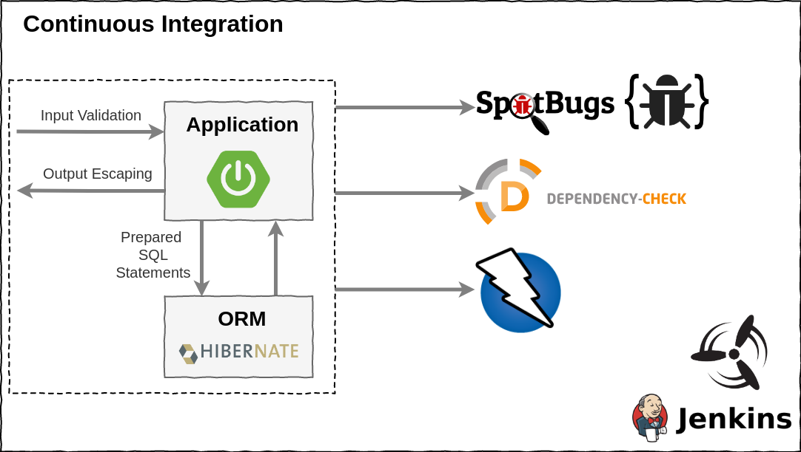
Demo Time - Show me the Code
Container Security
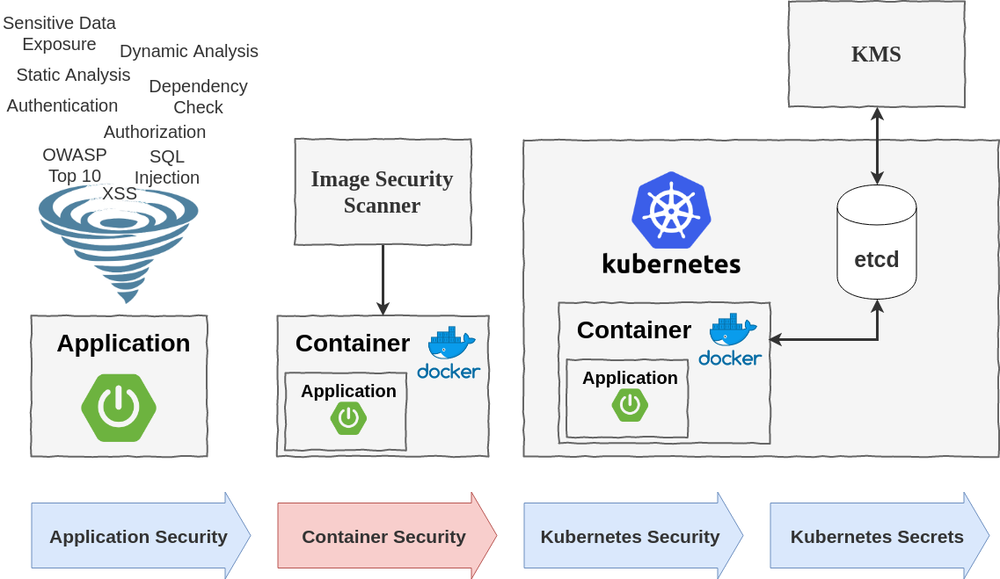
Say no to Root
USER directive in Dockerfile
Say no to Root
Dockerfile
FROM openjdk:11-jre-slim
COPY hello-spring-kubernetes-1.0.0-SNAPSHOT.jar app.jar
EXPOSE 8080
RUN addgroup --system --gid 1002 app && adduser
--system --uid 1002 --gid 1002 appuser
USER 1002
ENTRYPOINT java -jar /app.jar
Vulnerabilities in well-know images
Keep being secure
Perform image scanning (Anchore, Clair, ...)
Regularly update your (base) images
Checkout Google Distroless Images
https://anchore.com/opensource
https://github.com/coreos/clair
https://docs.docker.com/ee/dtr (Docker Trusted Registry)
https://github.com/GoogleContainerTools/distroless
Demo Time - Show me the Code
Kubernetes Security
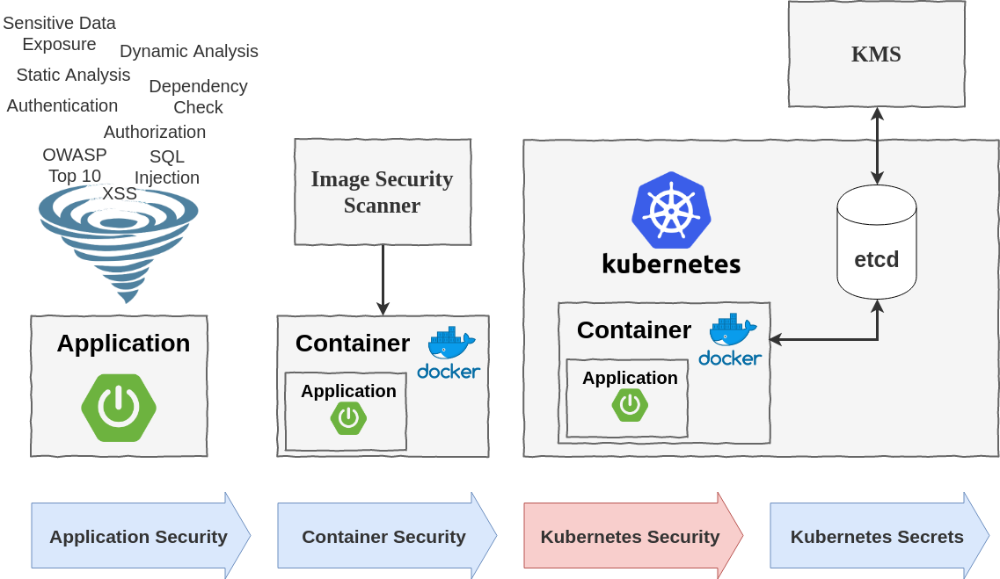
Say no to Root
USER directive in Dockerfile
K8s Security Context for a Pod/Container
Pod Security Policy (Beta)
Just say no to root containers
Pod Security Policy
Pod Security Context
Helm is Root on K8s
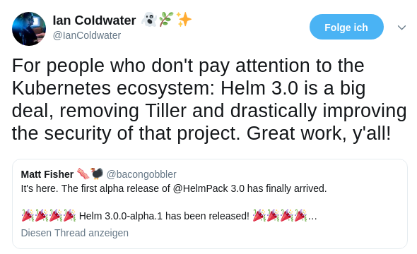Keep being secure
- Restrict ports & enable authentication
(api-server/etcd/kubelet) - Configure network policies
- Use role-based access control (RBAC)
- Regularly update kubernetes version
Securing a Cluster
Kubernetes RBAC
Kubernetes Network Policies
Keep being secure (cont'd)
- Enable node patching (Reboot nodes)
- Monitor your cluster & apps
- Enable K8s auditing
- Log all the things
Kubernetes Reboot Daemon
K8s Monitoring, Logging, and Debugging
Fluentd Log Collector
Kubernetes Auditing
Prometheus
Demo Time - Show me the Code
Kubernetes Secrets
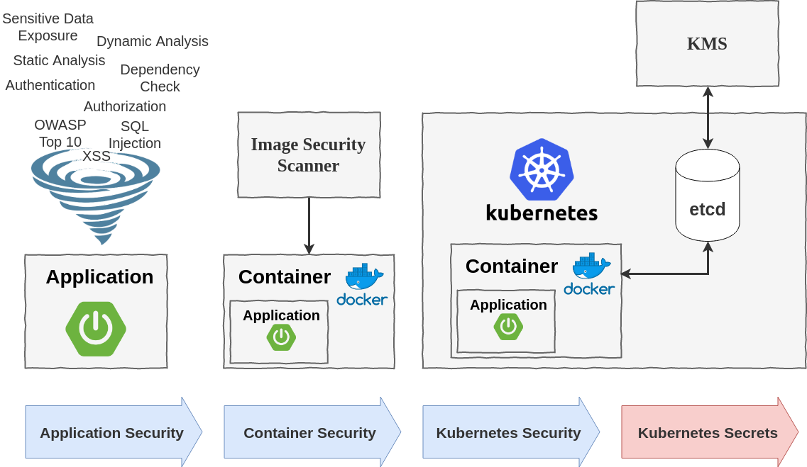
K8s Config Maps
kind: ConfigMap
apiVersion: v1
metadata:
name: hello-spring-cloud-kubernetes
namespace: default
data:
hello.message: k8s
hello.prefix: Hi
data:
application.properties: |-
hello.message=k8s
hello.prefix=Hi
data:
application.yaml: |-
hello:
message: k8s
prefix: Hi
K8s Secrets
apiVersion: v1
kind: Secret
metadata:
name: hello-spring-cloud-kubernetes
namespace: default
type: Opaque
data:
user.username: dXNlcg==
user.password: azhzX3VzZXI=
admin.username: YWRtaW4=
admin.password: azhzX2FkbWlu
Secrets in etcd DB are NOT encrypted with default settings !!
Just Base64 encoded!
Why protect Secrets?
Attractive target for hackers
Easily leak to repos, logs, ...
Violation of “Least Privilege” principle
Best Practice for secrets
Do not use K8s API for reading secrets
"Listing secrets allows the clients to inspect the values of all secrets that are in that namespace."
https://kubernetes.io/docs/concepts/configuration/secret/#best-practices
Best Practice for secrets
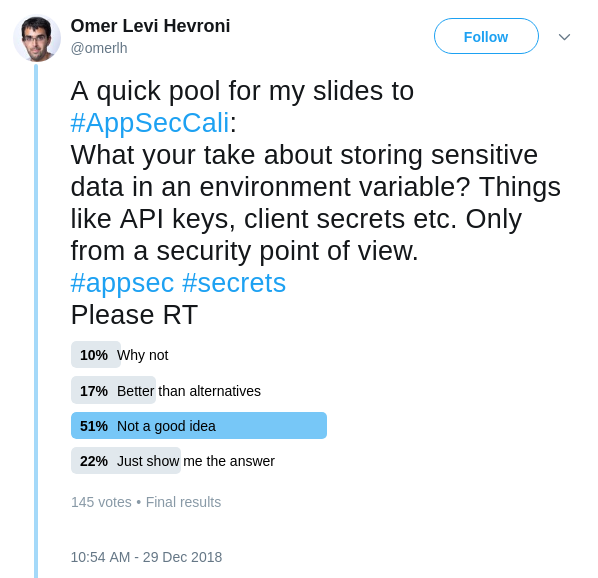
Encryption Layers
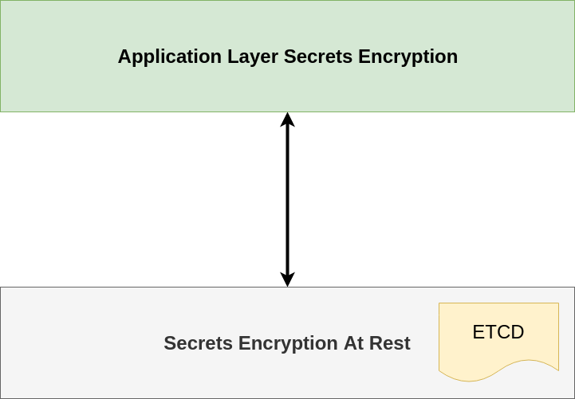
Envelope Encryption on K8S
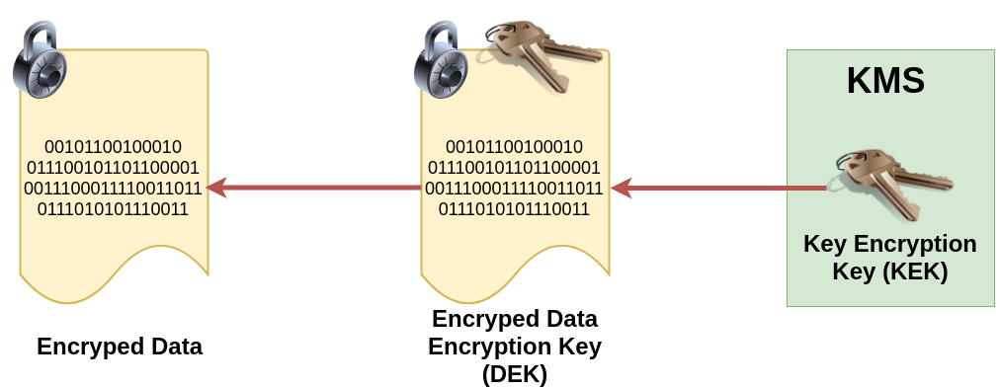
Supported as of kubernetes version 1.10
https://cloud.google.com/kms/docs/envelope-encryption
https://kubernetes.io/docs/tasks/administer-cluster/kms-provider/
Cloud KMS
Azure Key Vault
Google Cloud KMS
AWS KMS
Hashicorp Vault KMS Plugin
Spring Cloud Kubernetes
https://spring.io/projects/spring-cloud-kubernetes
https://cloud.spring.io/spring-cloud-kubernetes/spring-cloud-kubernetes.html
Features
- DiscoveryClient for Kubernetes (Ribbon Support)
- ConfigMapPropertySource
- SecretsPropertySource
- Kubernetes Ecosystem Awareness
- Kubernetes Profile
- Pod Health Indicator
Demo Time - Show me the Code
The End
Summary / Key Insights
- Configs, Secrets & Discovery the “Spring Way”
-- More to come: Istio & Helm awareness, ... - “Least privilege” for service accounts
- Ensure your secrets are encrypted in K8s
- Say NO to root on K8s
- Keep K8s and container images up-to-date
Q&A
https://www.novatec-gmbh.de https://blog.novatec-gmbh.deandreas.falk@novatec-gmbh.de
Twitter: @andifalk